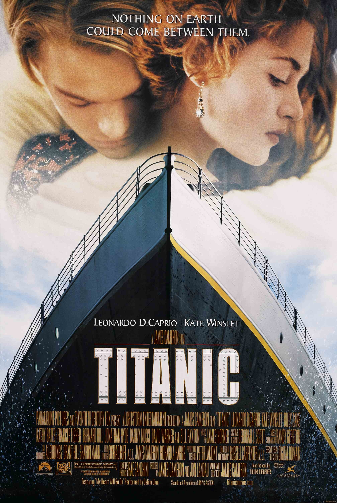

A seventeen-year-old aristocrat falls in love with a kind but poor artist aboard the luxurious, ill-fated R.M.S. Titanic. James Cameron's "Titanic" is an epic, action-packed romance set against the ill-fated maiden voyage of the R.M.S. Titanic; the pride and joy of the White Star Line and, at the time, the largest moving object ever built. She was the most luxurious liner of her era -- the "ship of dreams" -- which ultimately carried over 1,500 people to their death in the ice cold waters of the North Atlantic in the early hours of April 15, 1912.